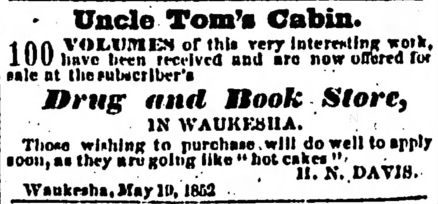

Printing Morality: Uncle Tom's Cabin and the Antebellum Political Realignment
This paper studies whether exposure to Harriet Beecher Stowe's Uncle Tom's Cabin shifted political outcomes in the Northern United States. I exploit county-level variation in the novel's diffusion through advertising and transportation networks to study its effects on voting and political attitudes.
Presented: GW Applied Micro Brownbag, Warwick SAGE Summer School 2023, ACES Summer School 2023, the EHA 2023 Annual Meeting (Poster), the 2025 World Economic History Congress, and the ASREC 2026 Annual Meeting.